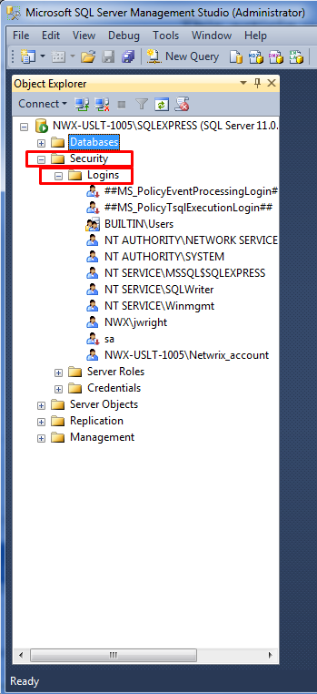
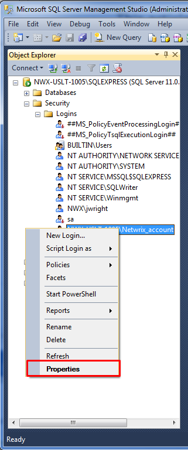
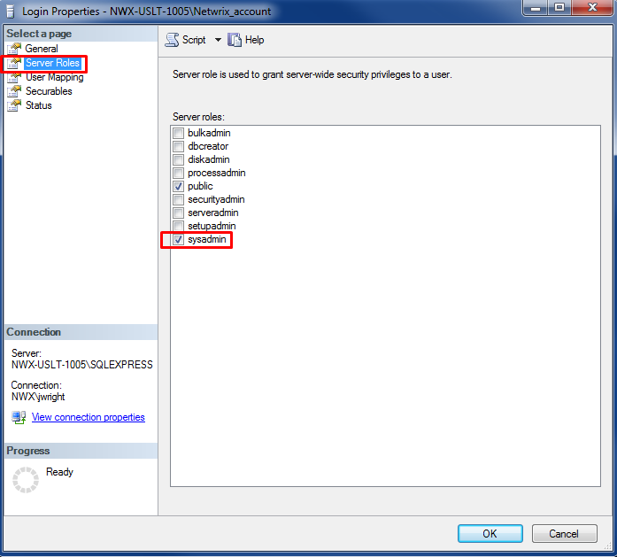
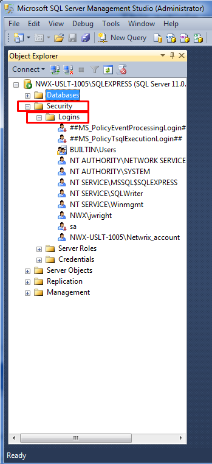
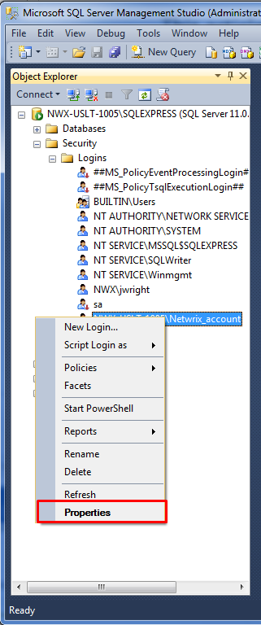
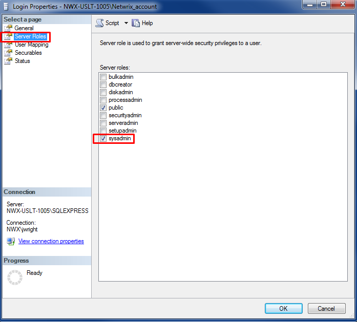

Your audited system fails with the following error: Error saving history to database:
Database %name of database% already contains tables that are not compatible with the product
Database permissions for the Data Processing Account are not sufficient. The Data Processing Account must either be a Sysadmin or have DB_Owner permission to each Netwrix database in order to upload audit data to the reporting database
Using SQL Management Studio give the Data Processing Account DB_Owner rights to the product database in question. To do this perform the following: 1) Log into the instance which contains the product database using SQL Management Studio with a sysadmin account. 2) Expand Security and then Logins.  3) Right click the Data Processing Account and go to Properties (add the account if it doesn't exist).  4) Under Server Roles you can give sysadmin to this account OR alternatively you can go to User Mapping and select each Netwrix database individually and add DB_Owner permissions. 
Database permissions for the Data Processing Account are not sufficient. The Data Processing Account must either be a Sysadmin or have DB_Owner permission to each Netwrix database in order to upload audit data to the reporting database
Using SQL Management Studio give the Data Processing Account DB_Owner rights to the product database in question. To do this perform the following: 1) Log into the instance which contains the product database using SQL Management Studio with a sysadmin account. 2) Expand Security and then Logins.  3) Right click the Data Processing Account and go to Properties (add the account if it doesn't exist).  4) Under Server Roles you can give sysadmin to this account OR alternatively you can go to User Mapping and select each Netwrix database individually and add DB_Owner permissions. 